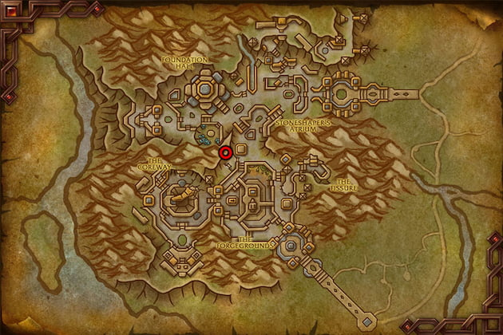
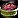
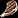

Cooking Trainer
You can learn the War Within Cooking skill from Athodas in Dornogal. You can find her inside the Stonelight Rest inn on the lower floor.

Shopping List
Here are the ingredients needed to level Cooking to 100 in The War Within:
Auction House
- 150x Basically Beef
- 500x
 Portioned Steak
Portioned Steak - 75x

Spiced Meat Stock - 75x
 Chopped Mycobloom
Chopped Mycobloom - 75x
 Fresh Fillet
Fresh Fillet
Cooking vendor
You can buy the cooking ingredients from Kronzon, the cooking supply vendor near the trainer. They aren't listed in the guide since you can easily buy them in bulk from the vendor at a low cost, which helps keep the guide easier to read. Use Shift+Left Click to buy more than one at a time.
- 625x
 Coreway Dust
Coreway Dust - 115x
 Crunchy Peppers
Crunchy Peppers - 25x
 Granulated Spices
Granulated Spices - 40x Khaz Algar Tomato
- 140x
 Twined Herbs
Twined Herbs
Cooking Profession Equipment
This step is optional and not required to proceed, but if you're serious about cooking, it might be a good idea to get some profession equipment before you start leveling. While it's a minor detail, it could save you a bit of gold through resourcefulness.
Head to the Auction House and pick up these two profession equipment items. If the highest quality versions are too pricey, you can go for the lower quality ones, they won't make a huge difference.
If you have the necessary professions, you can also craft them yourself.
| Equipment | Slot | Crafted by | Reagents |
|---|---|---|---|
| Accessory | Tailoring (25) | 1x 2x Storm Dust 1x Exquisite Weavercloth Bolt | |
| Tool | Inscription (25) | 2x Codified Greenwood 1x |
Leveling War Within Cooking
1 - 35
Craft the recipes in the same order as listed below.
-
Make 30x
 Portioned Steak - 150x Basically Beef
Portioned Steak - 150x Basically Beef
-
Make 15x

Unseasoned Field Steak -
Then make Hearty Food and use Unseasoned Field Steak as ingredient.
The tooltip says you learn Hearty Food at 100, but you automatically learn the  Hearty Food recipe at 25 right now. This might be a bug.
Hearty Food recipe at 25 right now. This might be a bug.
35 - 55
- 35 - 45
5x Meat and Potatoes - 40x Portioned Steak
Meat and Potatoes - 40x Portioned Steak
- 45 - 55
5x Stuffed Cave Peppers - 100x Portioned Steak
Stuffed Cave Peppers - 100x Portioned Steak
55 - 85
I recommend getting the Beledar's Bounty recipe from the Striking Steel Quest Chain for this part. This recipe requires much cheaper ingredients, but it provides the same stat buff. It's definitely worth completing this quest chain to obtain it.
Striking Steel Quest Chain
Head to Meredar in Hallowfall and pick up the  Economical Request quest from Auralia Steelstrike, the Renown Quartermaster.
Economical Request quest from Auralia Steelstrike, the Renown Quartermaster.
There are alternative recipes below if you don't want to do the quest or can't find it.
 Economical Request
Economical Request- A Batty Request, Does Anyone Like Wasps?, Regular Fiber.
- Underground Economics.
- There’s a break between part 1 and part 2 of the quest chain, so you’ll need to wait a day before you can accept “Spice up your Life” and “Eagle Eye, Eagle Die.” The quest giver will be in a different location the next day from where you left off. You can find Auralia Steelstrike in the center of Mereldar, standing by the fountain.
- Spice Up Your Life,Eagle Eye, Eagle Die.
- Full Dress
- Cooking With Style
- A Home Cooked Meal
Learn the Recipe: Beledar's Bounty recipe, then make 15.
15x Beledar's Bounty - 225x  Portioned Steak
Portioned Steak
Alternative recipes if you don't want to do the Quest
If you prefer not to complete the quest chain, you can use these alternative recipes, but they are much more expensive to craft.
First, make these to reach 65:
5x Jester's Board - 250x  Fresh Fillet, 100x
Fresh Fillet, 100x  Portioned Steak
Portioned Steak
Then, buy one of the following recipes:
| Recipe | Ingredients | Recipe Source |
|---|---|---|
| 10x Empress' Farewell | 500x 200x Spiced Meat Stock | Sold by Polo in the City of Threads. Cost: 1500x |
| 10x | 500x 200x Spiced Meat Stock | Sold by Collector Z'til in the City of Threads. Cost: 2638x |
85 - 100
5x  Everything Stew - 75x
Everything Stew - 75x  Portioned Steak, 75x Spiced Meat Stock, 75x
Portioned Steak, 75x Spiced Meat Stock, 75x  Chopped Mycobloom, 75x
Chopped Mycobloom, 75x  Fresh Fillet
Fresh Fillet
The Recipe: Everything Stew is sold by Waxmonger Squick in The Ring of Deeps for 1000x Resonance Crystals.
Alternatively, if the previous recipes are selling well at the Auction House or you find them useful for yourself, you can continue making those up to level 100. They will turn green for the last 8 points, but they boost the highest secondary stat, making them likely more popular among players. On the other hand, this one increases the lowest stats, so it might be less in demand.
Congratulations on reaching 100! If you have any feedback on the guide (areas that could be improved, typos, errors, or incorrect material numbers), please don't hesitate to let me know. Your input helps make the guide better for everyone!